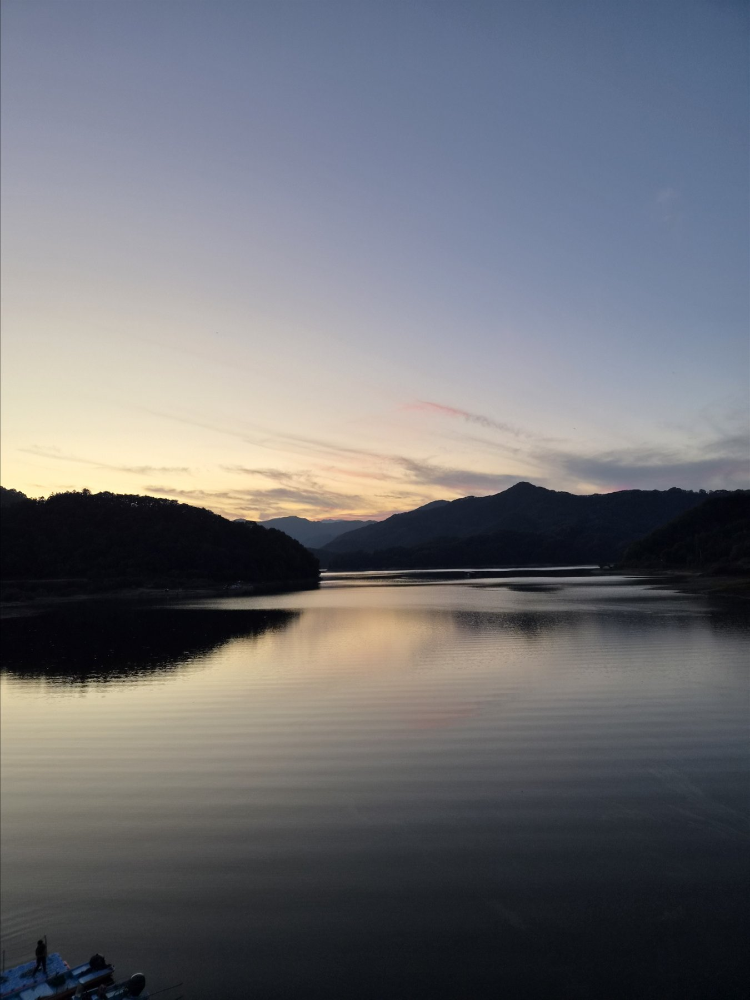
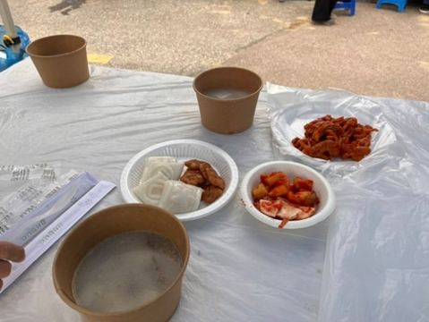
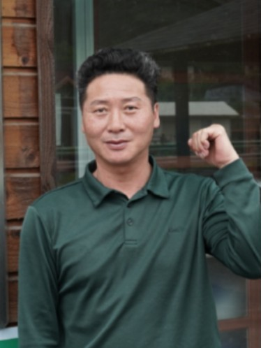

2026 공수리마을 주막할매축제
축제 소개
공수리의 풍경과 축제에 담긴 이야기를 만나보세요.
공수리 마을 소개

강원특별자치도 양구군 양구읍 공수리는 파로호와 산자락이 어우러진 마을입니다. 공수대교에 서면 탁 트인 호수의 풍경이 펼쳐지고, 저녁이면 산 너머로 지는 노을이 물 위에 번집니다. 주변 산에서는 산채가 나고 과수 농가도 곳곳에 있어, 계절에 따라 달라지는 농촌의 풍경을 만날 수 있습니다.
공수리라는 이름에는 오래된 마을의 이야기가 담겨 있습니다. 공수골과 갬벌, 주막거리로 불리던 마을들이 1914년 행정구역 개편을 거치며 하나의 공수리로 묶였습니다. 공수골에는 관에서 관리할 만큼 큰 은행나무가 있었다는 이야기가 전해지며, ‘공손수’라 불리던 나무에서 마을 이름이 이어졌다고 합니다.
파로호는 공수리의 풍경과 생활을 함께 바꾸었습니다. 1944년 화천댐 건설 이후 물이 차오르면서 일부 터전이 잠기고 마을은 호수를 사이에 두고 나뉘었습니다. 옛 모습이 사라진 아쉬움도 있지만, 주민들은 마을에 남은 이야기와 호수의 아름다움을 소중히 이어가고 있습니다.
오늘날 공수리는 오래 살아온 주민과 새로운 이웃들이 함께 살아가는 마을입니다. 농업과 어업, 임업 등 다양한 삶이 어우러지고, 주민들은 마을회에서 의견을 나누며 공동체를 가꾸고 있습니다. 주막할매축제 역시 주민들이 역할을 나누고 방문객을 맞이하며 이웃의 정을 나누는 자리입니다.
공수리가 꿈꾸는 미래는 잠시 지나가는 곳을 넘어 다시 찾고 싶고 머물고 싶은 마을입니다. 파로호의 풍경 속에서 쉬어가고, 마을의 먹거리와 체험을 즐기며, 사람들과 따뜻한 마음을 주고받는 곳. 공수리는 그 바람을 주민들과 함께 만들어가고 있습니다.
축제 배경 이야기
주막할매축제의 시작에는 마을 어르신들이 전해온 이야기가 있습니다. 옛 주막거리에서 홀로 주막을 운영하던 할머니를 주민들이 도왔고, 할머니는 한 해 한 번 국밥과 막걸리를 대접하며 감사의 마음을 전했다고 합니다.
공수리는 이 나눔의 기억을 오늘의 축제로 이어가고자 했습니다. 마을을 응원해준 분들에게 고마움을 전하고, 공수리의 풍경과 이야기를 방문객들과 함께 나누기 위해서입니다.
주민들은 함께 축제를 준비하며 역할을 나누고 서로를 배려하는 법을 배워갑니다. 주막할매축제는 먹거리와 체험을 즐기는 날이자, 주민과 방문객이 어울리며 마을의 정을 이어가는 자리입니다.
주막할매
축제 역사

2023년 첫 문을 연 주막할매축제는 주민들이 함께 준비하고 방문객과 정을 나누는 마을축제로 이어져 왔습니다. 2024년부터는 서울 노원구 대학들과 연합하여, 마을 주민과 대학이 함께 축제를 만들어가고 있습니다.
주막할매의 나눔 이야기를 바탕으로 첫 축제를 열었습니다.
서울 노원구 대학들과의 연합이 시작되었습니다. 주민들의 경험에 대학의 새로운 시선과 아이디어가 더해졌습니다.
대학생들의 참여와 공연, 다양한 체험이 어우러져 주민과 방문객이 함께 즐기는 마을 잔치로 이어졌습니다.
만들기 체험과 전통놀이, 엽전 경품 응모에 국밥 나눔까지 더해 주막할매의 정을 함께 나누는 축제를 열었습니다.
이장님의 말씀

공수리마을을 찾아주신 여러분, 반갑습니다.
공수리마을 이장 함광복입니다.
우리 공수리는 파로호의 잔잔한 물결과 산자락 너머로 지는 노을이 아름다운 마을입니다. 하지만 이 풍경보다 더 소중한 것은 서로를 돕고 정을 나누며 살아가는 주민들의 마음입니다.
옛날 우리 마을 주막거리에는 홀로 주막을 운영하던 할머니가 계셨다고 합니다. 주민들이 농사일을 도와드리면, 할머니는 한 해 한 번 국밥과 막걸리를 대접하며 고마움을 전하셨습니다. 주막할매축제는 그 따뜻한 나눔의 이야기를 오늘에 이어가고자 시작했습니다.
이 축제에는 공수리를 응원해주신 분들께 감사의 마음을 전하고, 우리 마을의 풍경과 이야기를 함께 나누고 싶은 주민들의 뜻이 담겨 있습니다. 함께 준비하고 손님을 맞이하는 과정은 우리 주민들이 서로를 이해하고 한마음이 되는 소중한 시간이기도 합니다.
공수리에 오시면 잠시 발걸음을 늦춰보시기 바랍니다. 파로호를 바라보고, 마을의 먹거리와 체험을 즐기며, 주민들과 정겨운 이야기도 나누어보세요. 이곳에서 보낸 하루가 여러분께 따뜻한 기억으로 남았으면 좋겠습니다.
앞으로도 공수리가 잠시 지나가는 곳을 넘어 다시 찾고 싶고 머물고 싶은 마을이 되도록 주민들과 함께 가꾸겠습니다. 무엇보다 서로를 배려하며 마음을 주고받는, 정이 가는 마을을 만들어가겠습니다.
공수리마을 주막할매축제에 여러분을 초대합니다.
고맙습니다.
공수리마을 이장 함광복